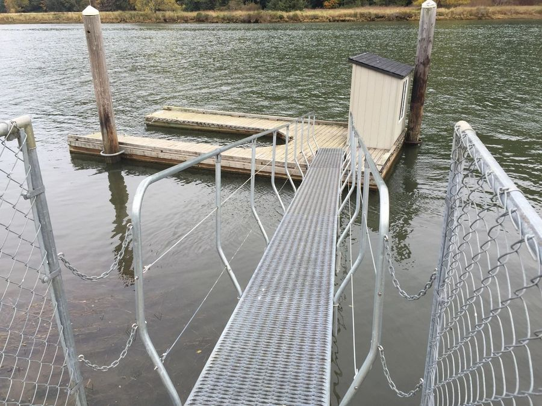
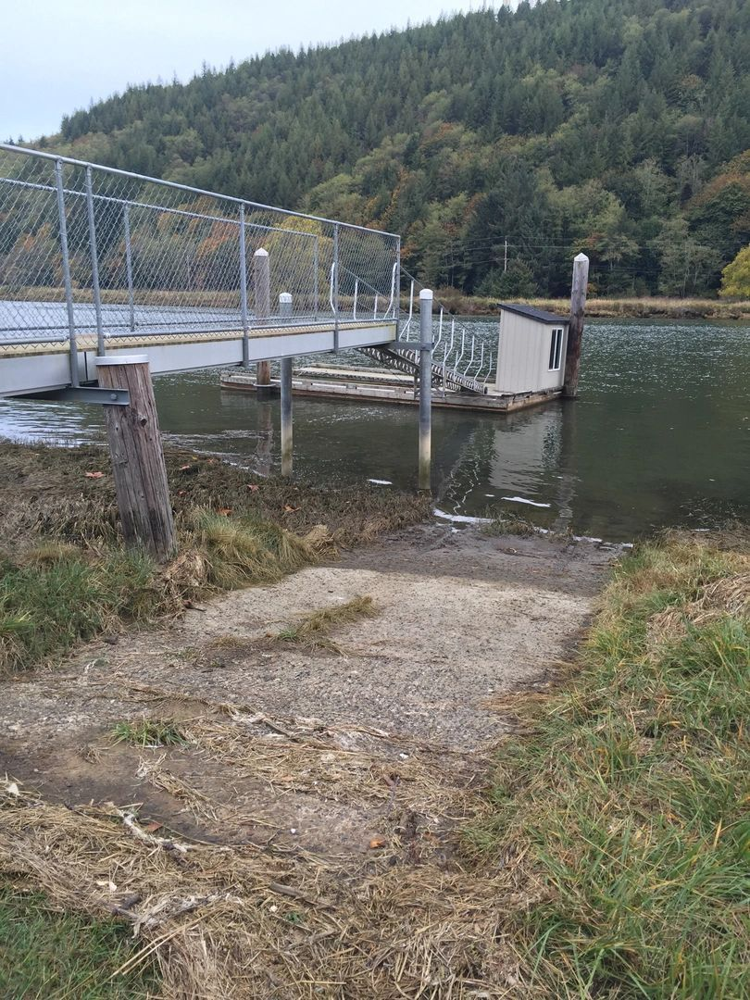
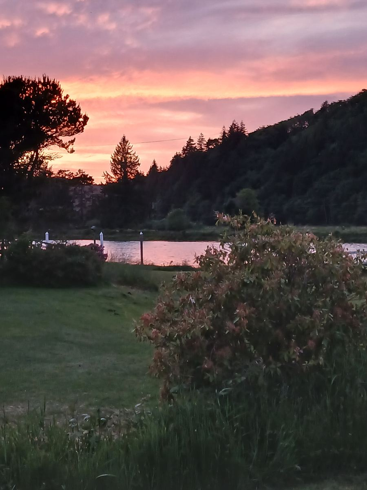
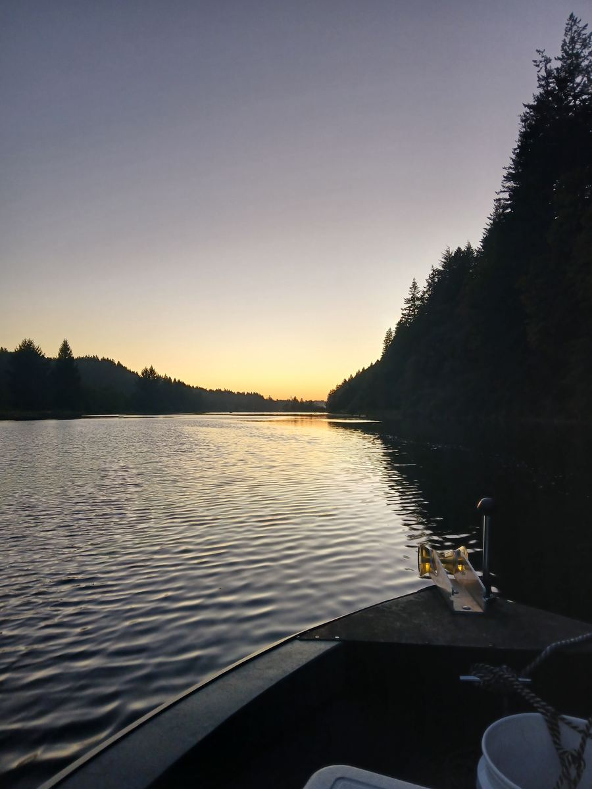
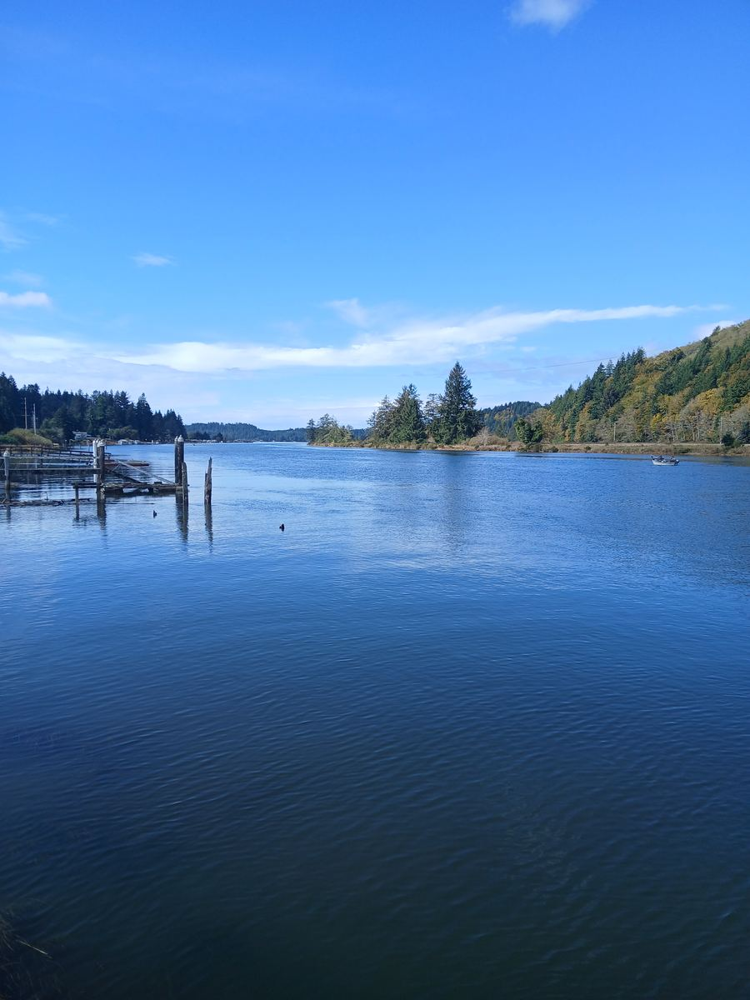
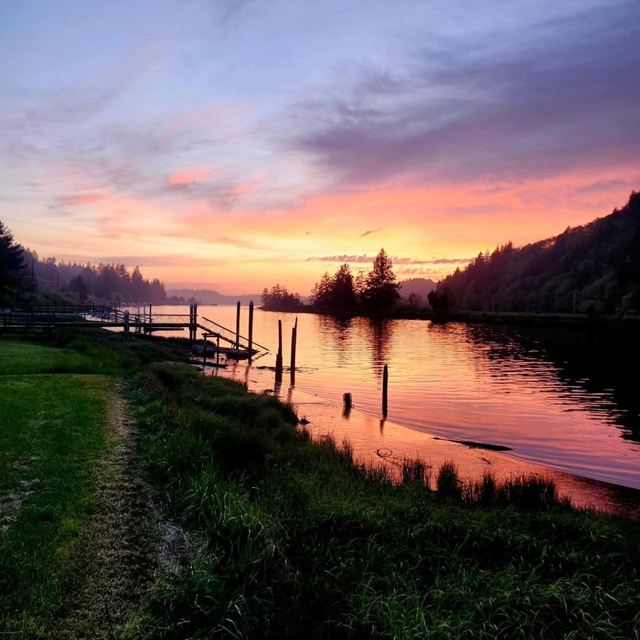
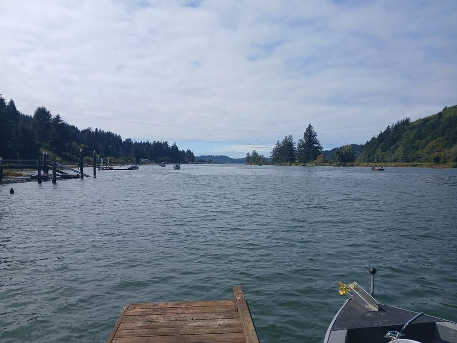
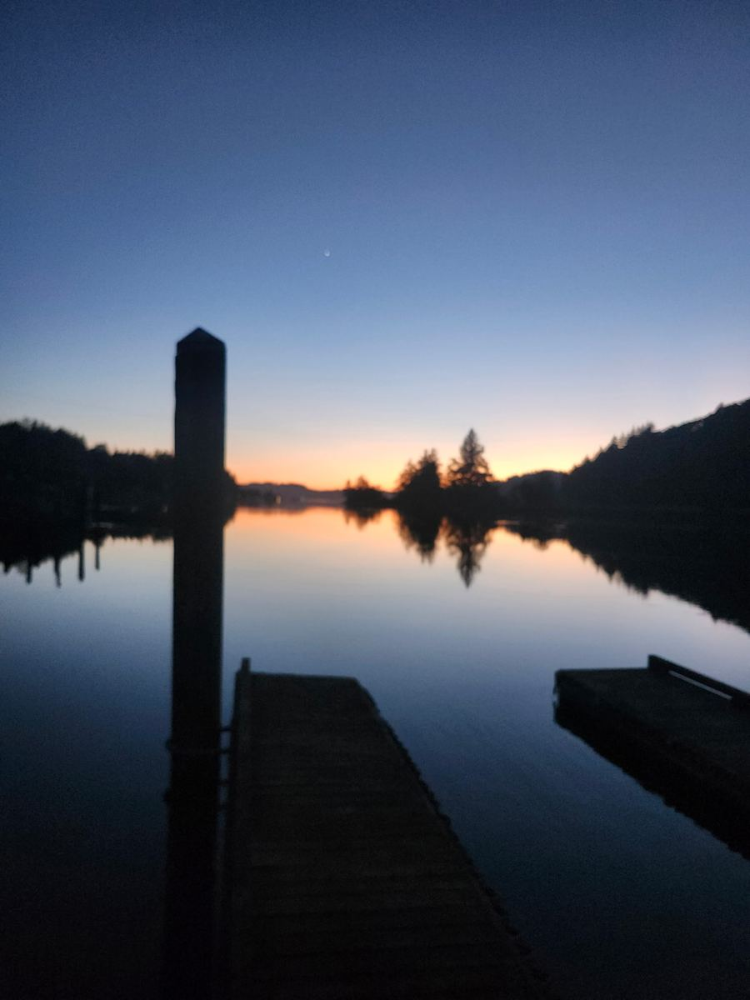
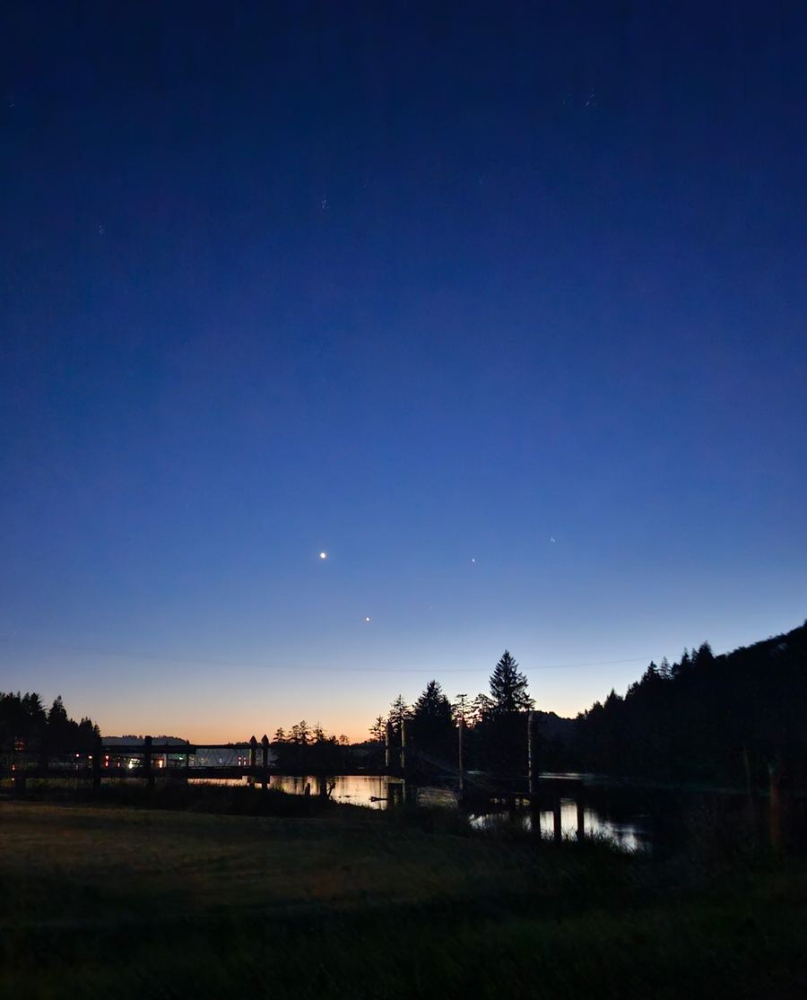

Out back
Your own dock. Your own ramp.
Most river trips start with a drive to the public launch and a wait in line. Here, the boat ramp and dock are in the backyard. Put in when the tide is right, tie off when you're done, and walk up to the house for lunch.
Between trips, the back deck is the best seat on the Alsea. From there you can watch river otters, harbor seals working the tide, birds of every kind, and elk along the far bank.
- Often River otters
- Often Harbor seals
- Often River birds
- Sometimes Roosevelt elk


From the dock
The same river, every hour.







